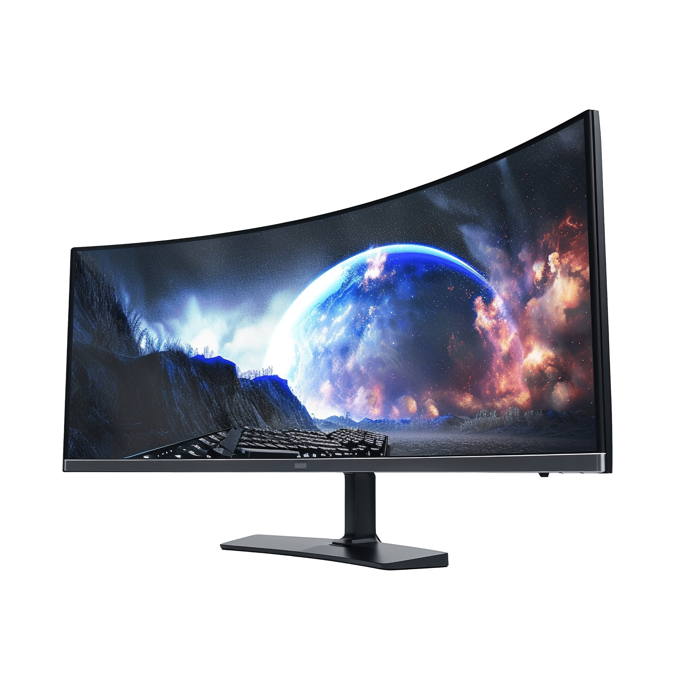

Tudo sobre Monitor
O monitor de computador(português brasileiro)ou ecrã do computador(português europeu)é um dispositivo (interface ou periférico) de saída, de exibição de dados/informações ao usuário que foram processadas pela CPU ou que foram inseridas pelo usuário. Também pode se considerar um unidade de entrada/saída (de sigla E/S, do inglês: input/output de sigla I/O) se o monitor tiver tela touch ou multitáctil
Tamanho da tela e proporção
O tamanho da tela é a distância em diagonal de um vértice da tela ao oposto, que pode ser diferente da área visível quando falamos de CRT , enquanto a proporção ou relação de aspecto é uma medida de proporção entre o largo e o alto do ecrã, assim por exemplo uma proporção de 4:3 ( Quatro terços ) significa que pela cada 4 pixels de largo temos 3 de alto, uma resolução de 800x600 tem uma proporção de tela 4:3, no entanto estamos a falar da proporção do monitor. Estas duas medidas descrevem o tamanho do que se mostra pela tela, historicamente até não faz muito tempo e ao igual que as televisões os monitores de computador tinham um proporção de 4:3. Posteriormente desenvolveram-se regulares para tela de aspecto panorâmico 16:9 (às vezes também de 16:10 ou 15:9) que até então só víamos no cinema.
Cores
A cada pixel da tela tem interiormente 3 subpíxels, um vermelho, um verde e outro azul; dependendo do brilho da cada um dos subpíxels, o pixel adquire uma cor ou outro de forma semelhante à composição de cores RGB. A maneira de organizar os subpíxels de um monitor varia entre os dispositivos. Costumam-se organizar em linhas verticais, ainda que alguns CRT organizam-nos em pontos formando triângulos. Para melhorar a sensação de movimento, é melhor organizá-los em diagonal ou em triângulos. O conhecimento do tipo de organização de pixels, pode ser utilizado para melhorar a visualização de imagens de mapas de bit usando renderizado de subpíxels. A maior parte dos monitores têm uma profundidade 8 bits por cor (24 bits ao todo), isto é, podem representar aproximadamente 16,8 milhões de cores diferentes. 